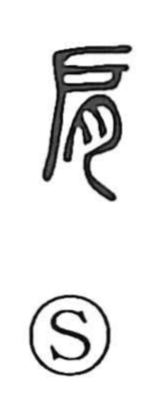

肩

Uncategorized
Kun: kata | On: ken
shoulder ・ to shoulder (a burden)
Explanation
A pictograph of the shoulder. The 戸 (old form 戶) element sketches the scapula and the shoulder socket seen in profile, while the flesh component 肉 (written as 月) is added to show the strong tendons and muscle that bind and protect the joint. Together they depict a shoulder with the joint at the center and mean kata, the shoulder itself. Because the shoulder is the body’s bearer, the character naturally extends to expressions of taking up a load or responsibility, as in the idea of shouldering a burden or bearing it on both shoulders.